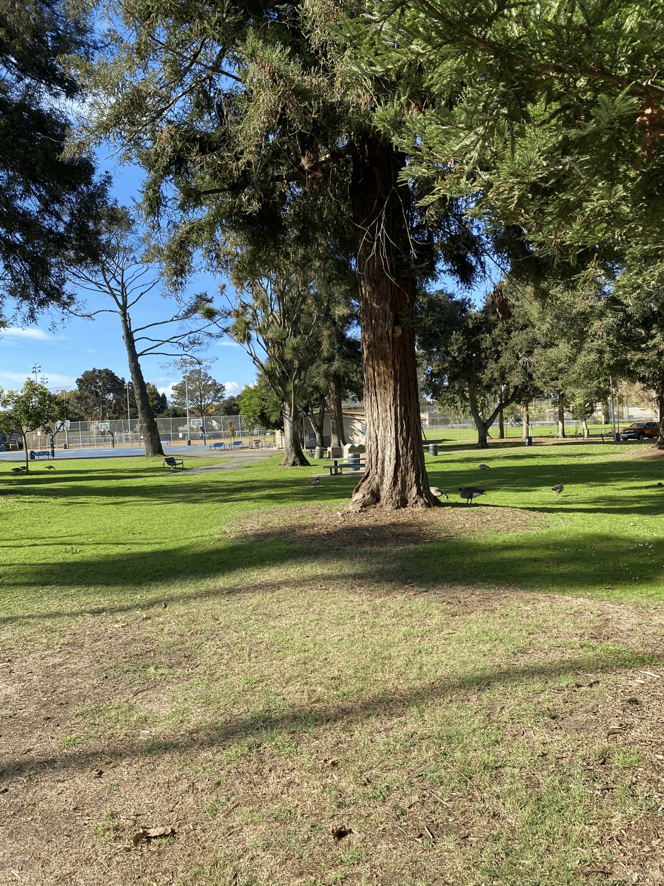
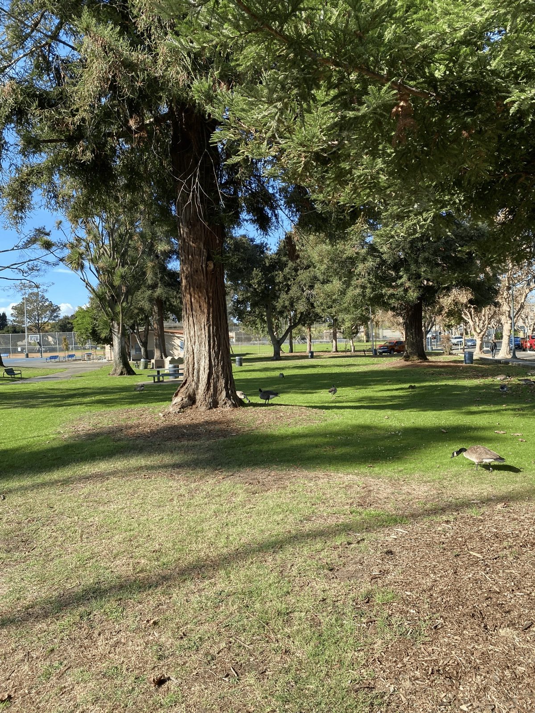
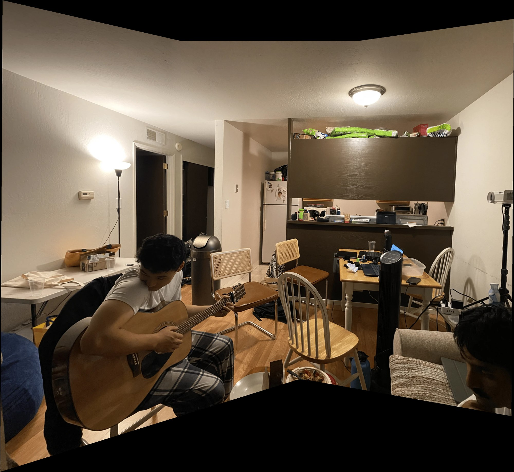
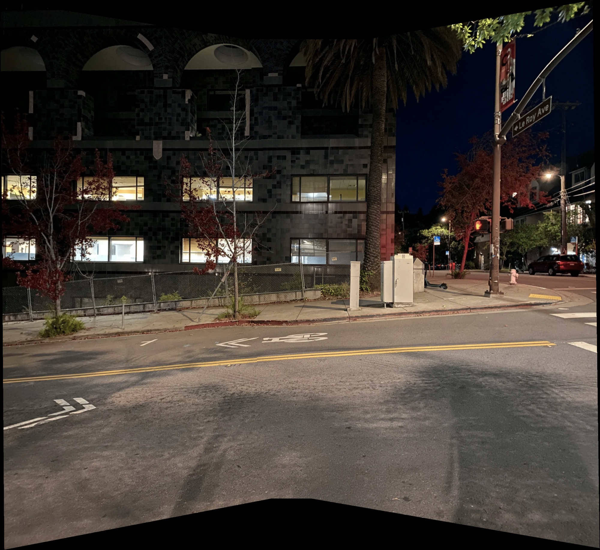
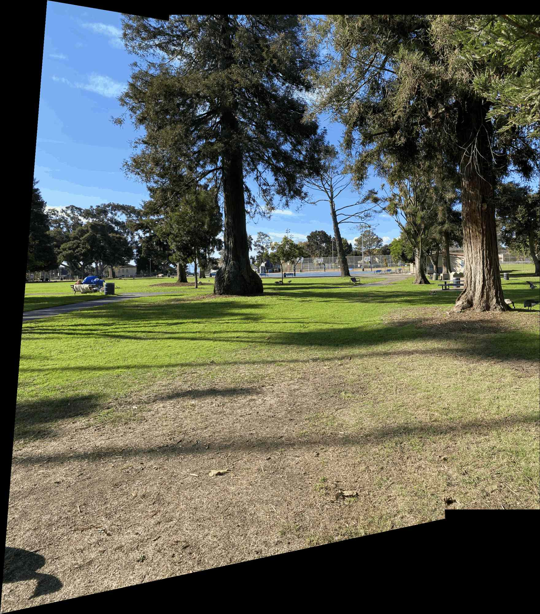

Project 4: Image Warping and Mosaicing

Part A: Image Warping and Mosaicing
Intro: a short overview of part A. Take two or more photos, recover the homographies between them, warp them into alignment, and blend them into a mosaic. For this part, our goal is to warp multiple images, then stitch them together to make a nice mosaic at the end! First, we can take two pictures of the same scene but rotating a little bit between each photo. Then, we can find the homography by finding correspondences between the images, then use that homography by applying interpolation and transforming the second image to fit onto a source image. Finally, we can compile all of these images onto one large photo and use some blending techniques to make it look pretty!
A.1 Shoot the Pictures
I shot these photos by simply rotating my camera slightly between each one, making sure not to move it. This is because if we translate the center of projection (camera)
in any way, it makes it so the homography might not work. The homography is a mapping from pixel coordinates in one image to another, if we add a translation
that changes the depth between images in some way, it's going to mess with our mapping. This is because the shift of a pixel also depends on its depth,
so if we have varying depth between images, a single mapping cannot map to both depths.
I chose to shoot here because there's a lot of features to pick correspondences with (grid in building, people who I asked to stay still, park with benches and
other sharp edges). They are also all just places I'm at in my daily life.
Set 1: Hanging out in Brian's living room
Set 2: Soda Hall at night, coming back from lab
Set 3: A Park!


A.2 Recover Homographies
To compute the homography, we build a system of equations! How do we do this? Well we know the homography is a 3x3 matrix (3x3 since it transforms homogeneous coords)
and we also know that the last term is 1 (can only recover homographies up to a scale, can just set it to 1). That leaves us with 8 unknowns. And we know that:
H^(3x3) * [x1, y1, 1]^T = [x2, y2, z]^T
We know both the original image coords and the resultant image coords, we just want to solve for H.
What we can do is multiply and expand out, and since h33 is just 1 we can take the final x2 and y2 term and move them on
the other side.
We also divide by the scale factor to get the normalized x2 and y2. I got that from this YT video here. But from here if you sub in 1 for h33, multiply out and isolate x2 and y2 (xd and yd in the picture) onto one side, and then organize the h values into a row vector we can get the general form:
Ultimately, we get a linear equation with the form Ah = b, where A is matrix composed of 1s, 0s, and points between
our images, h is our homography, and b is the coordinates after the transformation. From there we can take the least squares
estimate to find h.
Below, you can also see my correspondences. I didn't really have any specific reason for choosing them, but I did focus on picking sharp edges
and pixels with little ambiguity. For example, I stayed away from picking rounded edges, and I chose the corners of some of the benches and basketball courts.
System of Equations, values using the park correspondences
Correspondences


Recovered Homography
A.3 Warp the Images
How does nearest neighbor and bilinear interpolation work? Well its actually pretty simple.
We start with a grid of coordinates that represent the destination image (same size as source image usually). From there,
we can take each coordinate and multiply it by the inverse homography to see where it lands in the source image.
Now, we can just set the pixel value at the destination image as the pixel value sampled from the source image. Since the source image
is not guarenteed to be an integer and may land in between pixels, we can simply round the coordinates it ends up in and sample from there.
Since rounding gets the nearest coordinate, it makes this nearest neighbor interpolation.
Bilinear interpolation is a lot more complicated. Based on where the pixel lands, we can find the distances
between each of the four corners which are actual integer values. With those distances, we can create rectangular areas, where a pixels'
contribution is the rectangle formed opposite from the sampled point (since we want the pixel that the mapping is closest to to have the biggest contribution,
so we take the rectangle formed opposite of it since that is the rectangle with the largest area). Once we know the contributions of each pixel,
we can just multiply those weights by the pixel values in the source image and add those together to get the final image.
There's some other stuff I have too such as masking the pixels that get sourced to outside the image, and also clipping the indices
to prevent indexing errors which are methods shown in both interpolations.
Rectification 1: Cube


Rectification 2: PCB


Nearest Neighbor vs. Bilinear


Zooming in, we can tell the difference between the nearest neighbors interpolation and the bilinear interpolation. The bilinear interpolation
is much more smoother compared to the nearest neighbor interpolation. This is because the bilinear interpolation takes the average of the surrounding
pixels while nearest neighbor just inherits its nearest pixels value back in the source image. Since bilinear interpolation takes the average, it acts as a low pass
filter in a way, smoothing the output. In return, the bilinear interpolation is four times as slow (makes sense since you have to deal with 4x as many pixels).
Bilinear interpolation was also a lot more harder to implement.
A.4 Blend the Images into a Mosaic
Now, we basically have all the components we need to create a mosaic. We can take one image as
the reference image, and then warp the other images to it by finding the homography between them.
Once we do that, we can just map all of them onto a larger blank image and line them up to fit within our bounding box. Once they all fit,
we can apply the multiresolution blending (with two stacks as listed in the project page) we used in Project 2.
Here are the results!!!
Mosaic 1: Brian's Room

Mosaic 2: Soda Hall

Mosaic 3: Park

Takeaways
I think the greatest takeaway I got from this class is how a homography and bilinear interpolation works. Because I had an assignment in CS189 where I had to implement bilinear interpolation but I didn't really understand what I was doing, and also the way we did it was sort of chud because we did the forward transformation which left a bunch of holes. But overall, I think it's really cool and the ideas used in this project I feel like are very applicable. However, I'm mainly looking forward to then next part of the project where we use RANSAC and feature matching, because I've been using that in my robotics class and it's cool to see it used in another one of my classes. I also really enjoyed Prof. Efros' lecture on that section because it was really easy to digest.